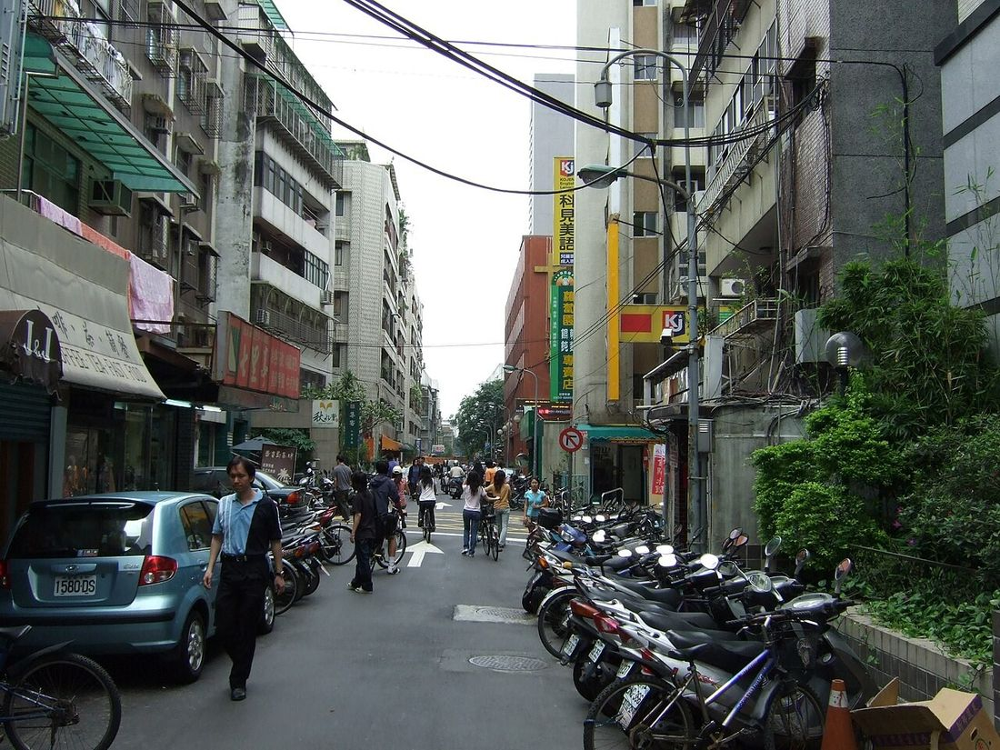
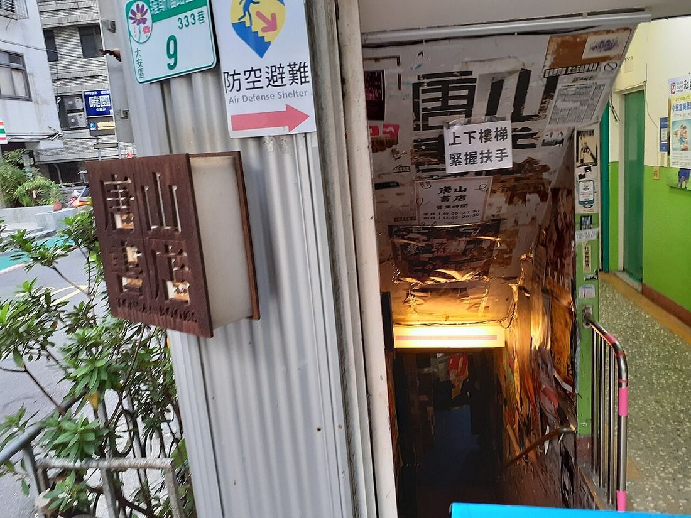
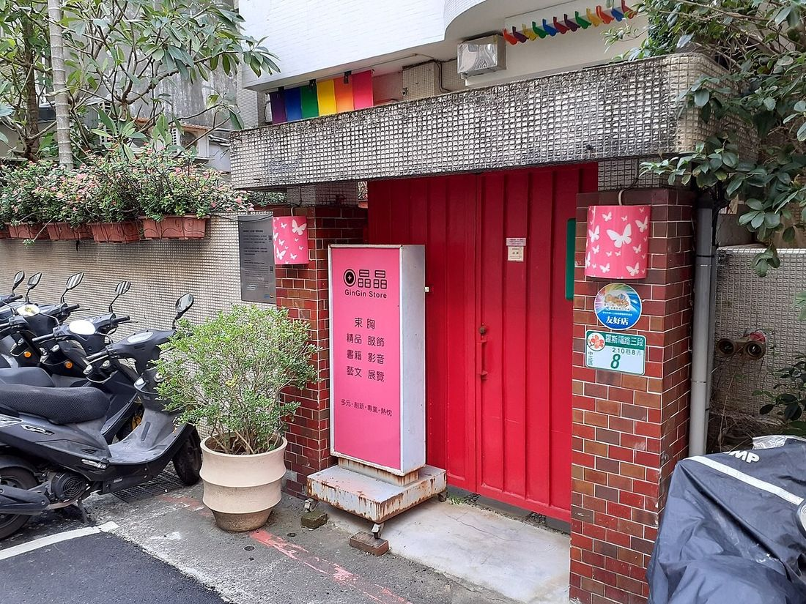
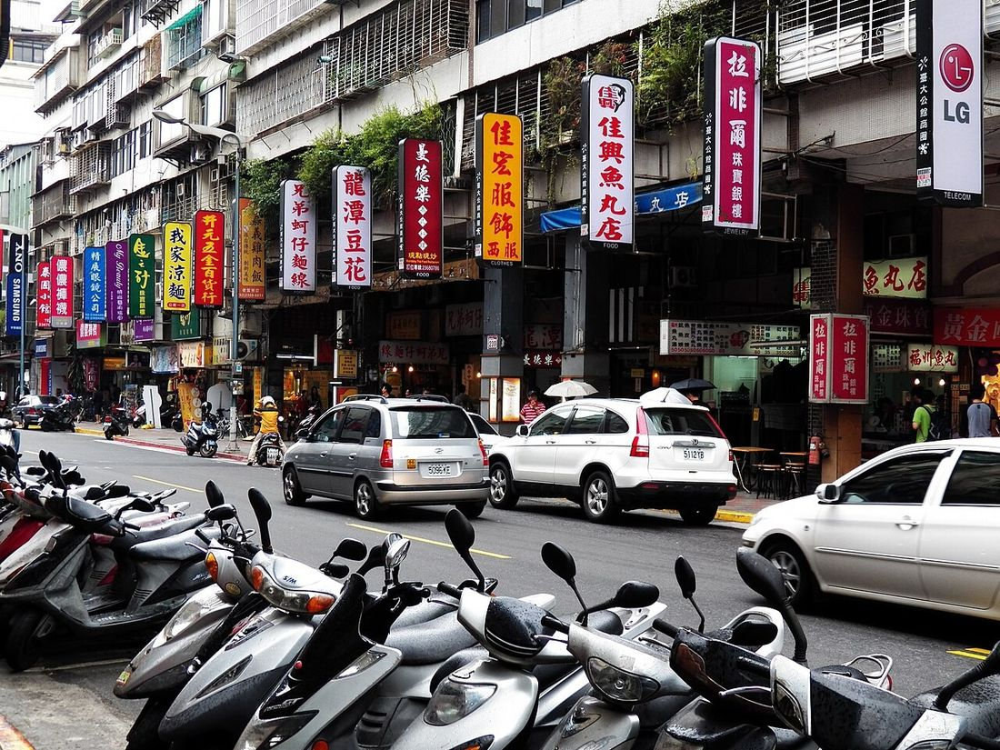

台北老店．公館溫羅汀
溫羅汀
台北有一塊街區，名字是用三條路拼起來的。

溫州街、羅斯福路、汀州路，取第一個字，叫「溫羅汀」。它夾在台大和師大中間，這幾十年，慢慢變成台北人心中的咖啡館聖地。
先有老師，再有書店
日本時代，這裡叫昭和町，是台北帝大和台北高校老師的宿舍區。
一九八七年解嚴前後，唐山書店、南天書局、晶晶書庫、女書店……獨立書店一家一家在台大周邊開張。
然後，咖啡館來了
・一九九〇年代初，羅斯福路上開了「挪威森林」
・一九九六年，女巫店開幕，咖啡館裡開始有人唱歌
・二〇〇五年，「海邊的卡夫卡」開張，還沿用挪威森林的老桌椅
・二〇一二年的報導說，溫州街靠辛亥路那段，五年內冒出好多新咖啡館
數字會說話
二〇一七年的報導統計，這一帶有 30 多家獨立書店、20 幾家人文咖啡館。學生、教授、寫字的人，點一杯咖啡，就能坐上一整個下午。
專業點：萃取率 18–22%
精品咖啡協會的金杯標準：一杯好咖啡，溶進水裡的物質，大約是咖啡粉重量的 18% 到 22%。
溶太少，味道單薄；溶太多，容易苦澀。下次在溫州街喝手沖，可以想想這杯落在哪裡。
老照片與街景




店家資訊
- 店家
- 溫羅汀
- 地點
- 台北市大安區、中正區 溫州街・羅斯福路・汀州路一帶
- 現況
- 營業中
- 營業時間
- 常有變動，出發前請再確認
- IG 影片
- 12/18 上片
你在溫羅汀最常坐的是哪一家？留言告訴我，下一集也許就拍它。
到 IG 留言告訴我們
到 IG 留言告訴我們